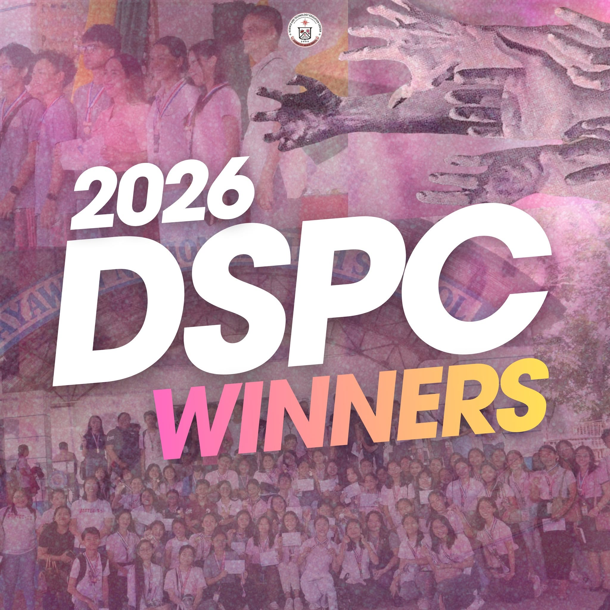

📖 Phil-IRI Results
The Philippine Informal Reading Inventory (Phil-IRI) assesses the reading proficiency of learners in both English and Filipino. The assessment enables teachers to identify learners' reading levels and implement appropriate interventions to strengthen literacy skills and improve overall academic performance.
Highlights
- English Reading Results
- Filipino Reading Results
- Reading Intervention Programs
- Monitoring of Reading Progress

📰 Campus Journalism
Bayawan City Science and Technology Education Center demonstrated excellence in journalism by emerging as the Overall Champion during the Division Schools Press Conference (DSPC). The school also produced 57 Regional Qualifiers, showcasing the outstanding writing, broadcasting, and communication skills of its student journalists.
Major Achievement
- 🏆 Overall Champion – DSPC
- 📰 57 Regional Schools Press Conference Qualifiers

🔢 Numeracy Excellence
BCSTEC continued to strengthen learners' mathematical skills through participation in national and international competitions. The school's outstanding performance in the SPEED Math Challenges reflects its commitment to academic excellence and effective mathematics instruction.
National SPEED Math Challenge 2025
- Mrs. Lorename T. Lacdao – Top 12 Best Coach (Level 3)
- Mrs. Lorename T. Lacdao – Top 19 Best Coach (Level 4)
International SPEED Math Challenge 2025
- 🏆 Top 9 Best Performing School
National SPEED Math Challenge 2026
- 🏆 Top 2 Best Performing School
- Mrs. Lorename T. Lacdao – Top 10 Best Coach (Level 3)
- Ms. Lee Marie M. Marfiel – Top 2 Best Coach (Level 4)

📚 Literacy Excellence
BCSTEC showcased excellence in grammar, language, and verbal ability competitions, highlighting the school's commitment to developing strong communication skills among learners.
Speed Grammar National Challenge 2025
- 🏆 Top 10 Best Performing School
- Mrs. Analuz L. Macabinguil
- Mrs. Beverly M. Benitez
- Mrs. Ellen Mae E. Mondejar
Speed Grammar International Challenge 2025
- 🏆 Top 7 Best Performing School
Verbal Ability International Competition 2026
- 🏆 Top 9 Best Performing School
- Mrs. Analuz L. Macabinguil

📊 Quarterly Assessment Results
Quarterly assessments provide valuable information about learners' academic progress. These results help teachers monitor performance, recognize achievements, and identify learners who may require additional academic support.
Assessment Highlights
- Total Enrollment
- With Honors
- With High Honors
- With Highest Honors

🎓 Promotion and Completion Rate
BCSTEC achieved remarkable school performance through high promotion and completion rates, reflecting the school's commitment to ensuring learner success and quality education.
School Performance
- ✅ 100% Promotion Rate
- ✅ 95.5% Completion Rate